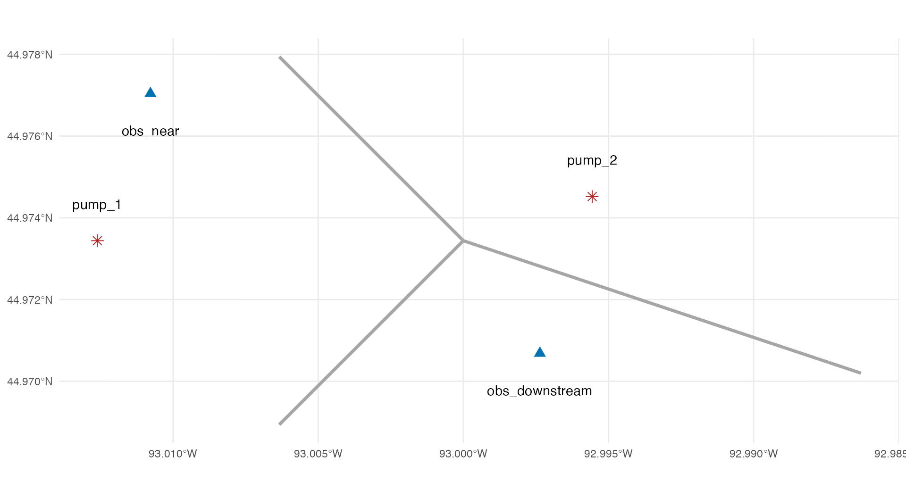
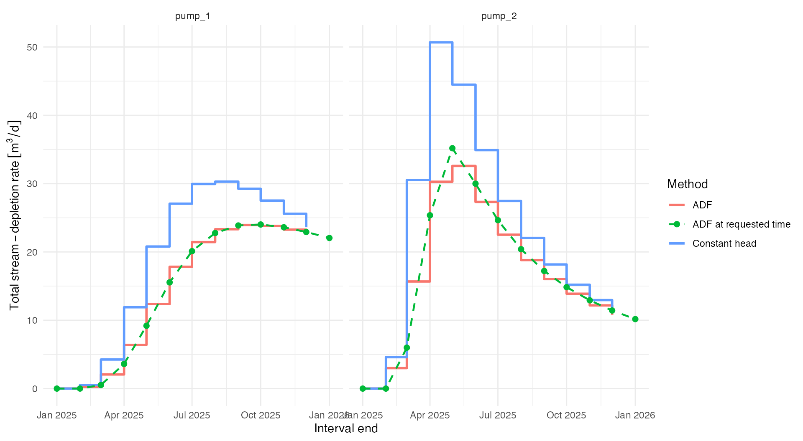
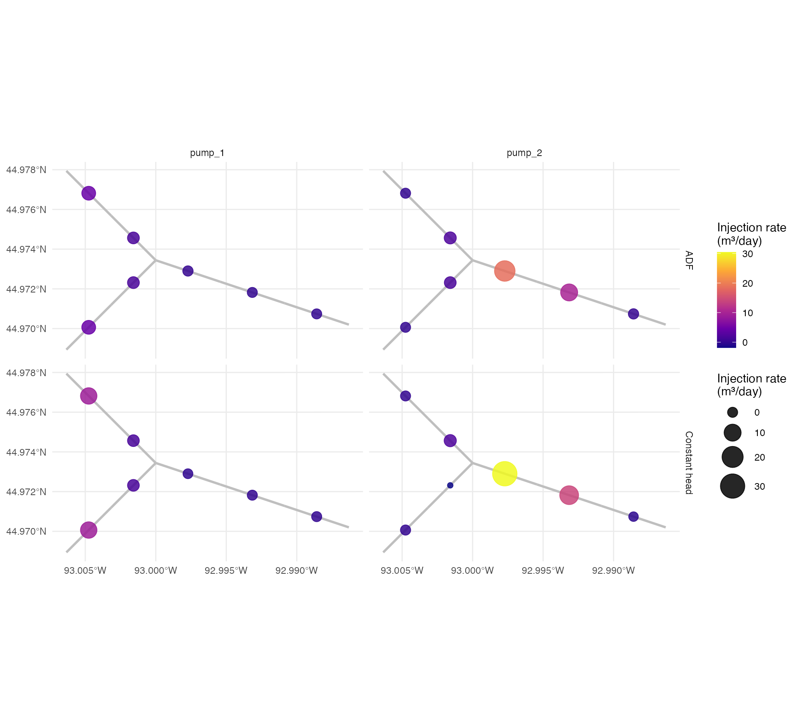
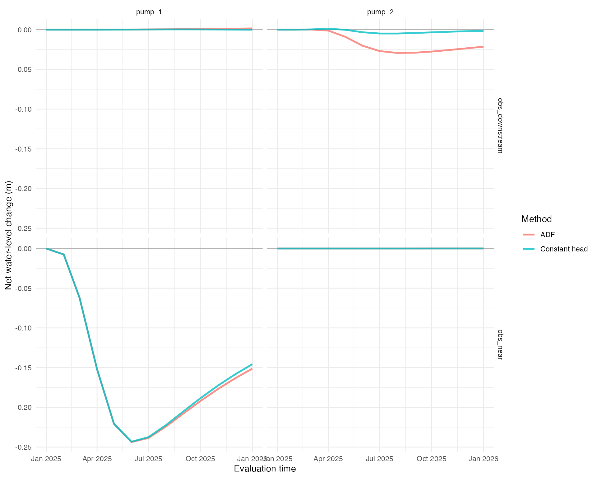
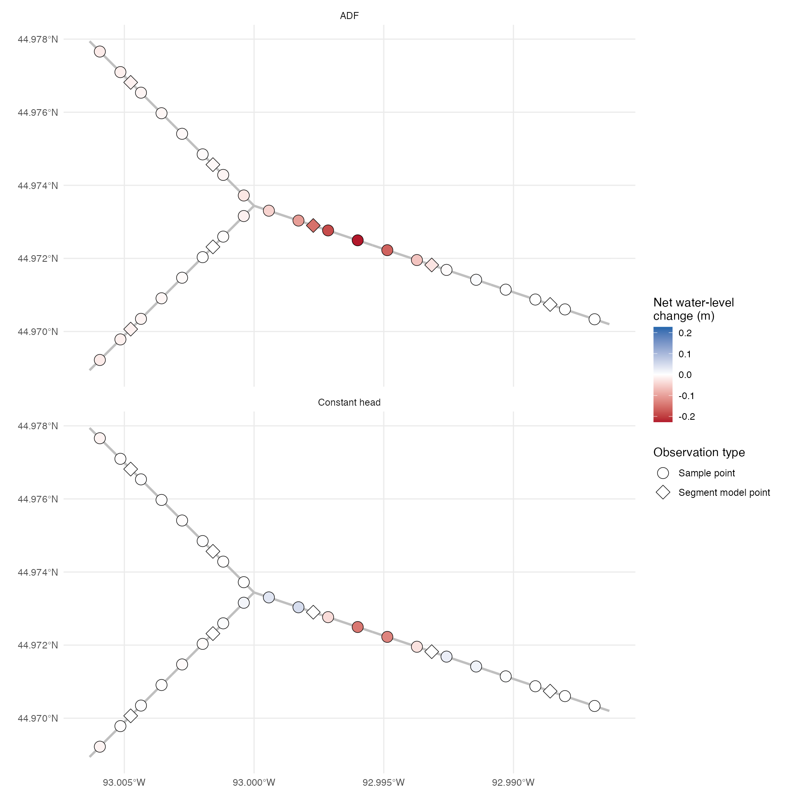

stream-depletion-and-drawdown.RmdThis vignette presents the main isw workflow for estimating stream depletion and the resulting water-level changes in an aquifer. It compares the package’s two methods for estimating depletion and stream-injection using spatial inputs included with the package:
method = "adf", the default, calculates analytical depletion and apportions it among stream segments; andmethod = "constant_head" solves the injection rates needed to keep water-level change equal to zero at the stream-segment model points.The focus here is how to prepare the inputs and connect the main functions. For more detail, see the website articles on the comparison of the two methods and the internals of ADF apportionment.
The package includes a synthetic example domain with two pumping wells, three connected stream reaches, and two observation wells, all as sf objects.
pumping_wells <- example_pumping_wells
stream_reaches <- example_stream_reaches
observation_wells <- example_observation_wells
ggplot() +
geom_sf(data = stream_reaches, color = "grey65", linewidth = 1.2) +
geom_sf(data = pumping_wells, color = "firebrick", shape = 8, size = 3) +
geom_sf(data = observation_wells, color = "#0072B2", shape = 17, size = 3) +
geom_sf_text(data = pumping_wells, aes(label = pump_id), nudge_y = 100) +
geom_sf_text(
data = observation_wells,
aes(label = observation_id),
nudge_y = -100
) +
labs(x = NULL, y = NULL) +
theme_minimal()
See the get_stream_segments() reference for CRS requirements, coordinate transformations, and automatic selection of a projected analysis CRS.
Required identifiers for spatial inputs are reach_id, pump_id, and observation_id, respectively. Pumping wells must also provide aquifer properties as units vectors including: hydraulic conductivity K, aquifer thickness D, and drainable porosity V. The optional well_diam prevents a point-well singularity when a response is evaluated inside the well radius.
The individual objects and their columns can be inspected directly.
pumping_wells
#> Simple feature collection with 2 features and 5 fields
#> Geometry type: POINT
#> Dimension: XY
#> Bounding box: xmin: 499006 ymin: 4980000 xmax: 500350 ymax: 4980120
#> Projected CRS: WGS 84 / UTM zone 15N
#> # A tibble: 2 × 6
#> pump_id K D V well_diam geometry
#> * <chr> [m/s] [m] <dbl> [m] <POINT [m]>
#> 1 pump_1 0.00001 50 0.1 0.3 (499006 4980000)
#> 2 pump_2 0.0000075 40 0.12 0.3 (500350 4980120)
stream_reaches
#> Simple feature collection with 3 features and 1 field
#> Geometry type: LINESTRING
#> Dimension: XY
#> Bounding box: xmin: 499500 ymin: 4979500 xmax: 501080 ymax: 4980500
#> Projected CRS: WGS 84 / UTM zone 15N
#> reach_id geometry
#> 1 upstream_1 LINESTRING (499500 4980500,...
#> 2 upstream_2 LINESTRING (499500 4979500,...
#> 3 downstream LINESTRING (5e+05 4980000, ...
observation_wells
#> Simple feature collection with 2 features and 1 field
#> Geometry type: POINT
#> Dimension: XY
#> Bounding box: xmin: 499150 ymin: 4979694 xmax: 500208 ymax: 4980400
#> Projected CRS: WGS 84 / UTM zone 15N
#> # A tibble: 2 × 2
#> observation_id geometry
#> * <chr> <POINT [m]>
#> 1 obs_near (499150 4980400)
#> 2 obs_downstream (500208 4979694)Both the adf and constant-head methods can use the same stream segments object. reach_spacing is the maximum modeled segment length; smaller values represent the stream boundary at greater spatial resolution but increase the number of injection rates that must be calculated.
Each returned segment contains a model_point. This is the discrete injection location and, for constant head, the location where the zero-change condition is imposed. The effective injection-well diameter is based on the segment’s represented_length.
stream_segments <- get_stream_segments(
stream_reaches,
reach_spacing = set_units(400, "m")
)
stream_segments[c(
"reach_id",
"reach_segment_id",
"represented_length",
"well_diam"
)]
#> Simple feature collection with 7 features and 4 fields
#> Geometry type: LINESTRING
#> Dimension: XY
#> Bounding box: xmin: 499500 ymin: 4979500 xmax: 501080 ymax: 4980500
#> Projected CRS: WGS 84 / UTM zone 15N
#> reach_id reach_segment_id represented_length well_diam
#> 1 upstream_1 upstream_1_segment_1 353.5534 [m] 176.7767 [m]
#> 2 upstream_1 upstream_1_segment_2 353.5534 [m] 176.7767 [m]
#> 3 upstream_2 upstream_2_segment_1 353.5534 [m] 176.7767 [m]
#> 4 upstream_2 upstream_2_segment_2 353.5534 [m] 176.7767 [m]
#> 5 downstream downstream_segment_1 379.4733 [m] 189.7367 [m]
#> 6 downstream downstream_segment_2 379.4733 [m] 189.7367 [m]
#> 7 downstream downstream_segment_3 379.4733 [m] 189.7367 [m]
#> geometry
#> 1 LINESTRING (499500 4980500,...
#> 2 LINESTRING (499750 4980250,...
#> 3 LINESTRING (499500 4979500,...
#> 4 LINESTRING (499750 4979750,...
#> 5 LINESTRING (5e+05 4980000, ...
#> 6 LINESTRING (500360 4979880,...
#> 7 LINESTRING (500720 4979760,...The same reference describes the returned columns in more detail.
pumping_schedules is a wide tibble, with pumping provided in units. Its first column, t, gives the start of each pumping period; every other column is named for a pump_id and contains that well’s rate. Rates continue until the next schedule row, so a shutdown must be represented by a row that sets the rate to zero.
pumping_schedules <- tibble(
t = as.Date(c("2025-01-01", "2025-02-01", "2025-03-01", "2025-04-01")),
pump_1 = set_units(c(500, 500, 300, 0), "m^3/day"),
pump_2 = set_units(c(0, 250, 250, 0), "m^3/day")
)
pumping_schedules
#> # A tibble: 4 × 3
#> t pump_1 pump_2
#> <date> [m^3/d] [m^3/d]
#> 1 2025-01-01 500 0
#> 2 2025-02-01 500 250
#> 3 2025-03-01 300 250
#> 4 2025-04-01 0 0evaluation_times specifies when stream depletion and water-level results are returned. Pumping-schedule times and evaluation times are always included as boundaries of the piecewise-constant stream-injection schedule.
The optional injection_times argument can add schedule boundaries without requesting additional water-level output. This can improve the interval-average approximation to continuously changing ADF depletion, but it increases computation for both methods. Constant-head rates are solved to satisfy the boundary at each interval end. Very short intervals can therefore require large corrective rates, especially when a regular refinement grid is combined with nearby evaluation or pumping times. This example leaves injection_times as NULL and uses monthly evaluation boundaries for a stable, readily interpreted comparison. Applications that add refinement times should inspect sensitivity to the resulting interval lengths.
evaluation_times <- seq.Date(
from = as.Date("2025-01-01"),
to = as.Date("2026-01-01"),
by = "month"
)
injection_times <- NULLSee the get_stream_injection_schedule() reference for the complete input requirements and interval construction rules.
ADF requires one additional step because its total analytical depletion must be apportioned spatially. get_adf_stream_apportionment() calculates a set of segment weights independently for each pumping well. sample_spacing controls how finely curved stream geometry is sampled when those weights are calculated; it does not change the number of modeled stream segments.
stream_apportionment <- get_adf_stream_apportionment(
pumping_wells,
stream_segments,
sample_spacing = set_units(100, "m"),
method = "web_squared"
)
stream_apportionment |>
st_drop_geometry() |>
group_by(pump_id) |>
summarize(
total_apportionment_fraction = sum(apportionment_fraction),
.groups = "drop"
)
#> # A tibble: 2 × 2
#> pump_id total_apportionment_fraction
#> <chr> <dbl>
#> 1 pump_1 1
#> 2 pump_2 1We can first calculate ADF stream depletion directly at the requested times. This is the simplest route when only ADF depletion, rather than its effect on aquifer water levels, is needed.
adf_depletion <- get_adf_stream_depletion(
pumping_wells = pumping_wells,
pumping_schedules = pumping_schedules,
stream_apportionment = stream_apportionment,
evaluation_times = c(evaluation_times, injection_times)
)
adf_depletion_totals <- adf_depletion |>
st_drop_geometry() |>
group_by(pump_id, evaluation_time) |>
summarize(
adf_depletion_at_time = sum(stream_depletion_rate),
.groups = "drop"
)
adf_depletion_totals
#> # A tibble: 26 × 3
#> pump_id evaluation_time adf_depletion_at_time
#> <chr> <date> [m^3/d]
#> 1 pump_1 2025-01-01 0
#> 2 pump_1 2025-02-01 0.00443
#> 3 pump_1 2025-03-01 0.524
#> 4 pump_1 2025-04-01 3.61
#> 5 pump_1 2025-05-01 9.19
#> 6 pump_1 2025-06-01 15.5
#> 7 pump_1 2025-07-01 20.1
#> 8 pump_1 2025-08-01 22.8
#> 9 pump_1 2025-09-01 23.9
#> 10 pump_1 2025-10-01 24.0
#> # ℹ 16 more rowsThe two interval schedules can now be constructed with the same function and time grid. "adf" is the default method, but it is written explicitly here to make the comparison clear.
With method = "adf", get_stream_injection_schedule() calls get_adf_stream_depletion() at every schedule boundary and averages depletion at adjacent boundaries. It reports the resulting aquifer injection as a signed injection_rate, which is negative when water enters the aquifer. Its magnitude is the average stream-depletion rate applied over the interval. By contrast, get_adf_stream_depletion() returns positive depletion at each requested time. If ADF depletion has already been calculated at every schedule boundary, it can be supplied through adf_stream_depletion to avoid recalculation. The supplied result must include all pumping, evaluation, and optional refinement boundaries used by the schedule.
With method = "constant_head", each returned interval rate is the rate solved to satisfy the constant-head boundary condition at the interval end.
adf_schedule <- get_stream_injection_schedule(
pumping_wells = pumping_wells,
pumping_schedules = pumping_schedules,
stream_segments = stream_segments,
evaluation_times = evaluation_times,
injection_times = injection_times,
method = "adf",
stream_apportionment = stream_apportionment,
adf_stream_depletion = adf_depletion
)
constant_head_schedule <- get_stream_injection_schedule(
pumping_wells = pumping_wells,
pumping_schedules = pumping_schedules,
stream_segments = stream_segments,
evaluation_times = evaluation_times,
injection_times = injection_times,
method = "constant_head"
)The constant-head result includes two diagnostics. boundary_residual is the signed water-level change remaining at a segment model point after the solve. matrix_condition_number indicates the numerical sensitivity of the system; isw warns when it exceeds .
An aquifer factorization is the decomposition of the stream-response matrix used to solve for the constant-head depletion rates. Wells with the same aquifer properties share this matrix, so isw factorizes it once for that aquifer-property combination and reuses the result for each associated pumping well. This reduces computation while preserving the depletion response attributed to each pump.
constant_head_schedule |>
st_drop_geometry() |>
summarize(
maximum_absolute_boundary_residual_m = max(abs(as.numeric(
set_units(boundary_residual, "m")
))),
maximum_matrix_condition_number = max(matrix_condition_number),
number_of_aquifer_factorizations = n_distinct(aquifer_id)
)
#> # A tibble: 1 × 3
#> maximum_absolute_boundary_resi…¹ maximum_matrix_condi…² number_of_aquifer_fa…³
#> <dbl> <dbl> <int>
#> 1 2.78e-17 1.39 2
#> # ℹ abbreviated names: ¹maximum_absolute_boundary_residual_m,
#> # ²maximum_matrix_condition_number, ³number_of_aquifer_factorizationsinjection_rate is negative when water leaves the stream and enters the aquifer. For each pumping well, total stream depletion is therefore the negative of the injection rate summed across all stream segments.
For ADF, the schedule contains interval-average analytical depletion. For constant head, it contains the depletion required to impose the stream boundary condition at the interval end.
stream_depletion <- bind_rows(
mutate(adf_schedule, method = "ADF"),
mutate(constant_head_schedule, method = "Constant head")
) |>
st_drop_geometry() |>
group_by(method, pump_id, interval_start, interval_end) |>
summarize(
stream_depletion_rate = -sum(injection_rate),
.groups = "drop"
)
stream_depletion |>
filter(interval_end %in% evaluation_times)
#> # A tibble: 48 × 5
#> method pump_id interval_start interval_end stream_depletion_rate
#> <chr> <chr> <date> <date> [m^3/d]
#> 1 ADF pump_1 2025-01-01 2025-02-01 0.00221
#> 2 ADF pump_1 2025-02-01 2025-03-01 0.264
#> 3 ADF pump_1 2025-03-01 2025-04-01 2.07
#> 4 ADF pump_1 2025-04-01 2025-05-01 6.40
#> 5 ADF pump_1 2025-05-01 2025-06-01 12.4
#> 6 ADF pump_1 2025-06-01 2025-07-01 17.8
#> 7 ADF pump_1 2025-07-01 2025-08-01 21.4
#> 8 ADF pump_1 2025-08-01 2025-09-01 23.3
#> 9 ADF pump_1 2025-09-01 2025-10-01 23.9
#> 10 ADF pump_1 2025-10-01 2025-11-01 23.8
#> # ℹ 38 more rowsThe direct ADF result at an interval end generally differs from the average rate applied during that interval. The following comparison makes that distinction explicit.
adf_interval_comparison <- adf_schedule |>
st_drop_geometry() |>
group_by(pump_id, interval_start, interval_end) |>
summarize(
adf_interval_average = -sum(injection_rate),
.groups = "drop"
) |>
left_join(
rename(
adf_depletion_totals,
adf_depletion_at_interval_end = adf_depletion_at_time
),
by = c(
"pump_id",
"interval_end" = "evaluation_time"
)
)
adf_interval_comparison
#> # A tibble: 24 × 5
#> pump_id interval_start interval_end adf_interval_average
#> <chr> <date> <date> [m^3/d]
#> 1 pump_1 2025-01-01 2025-02-01 0.00221
#> 2 pump_1 2025-02-01 2025-03-01 0.264
#> 3 pump_1 2025-03-01 2025-04-01 2.07
#> 4 pump_1 2025-04-01 2025-05-01 6.40
#> 5 pump_1 2025-05-01 2025-06-01 12.4
#> 6 pump_1 2025-06-01 2025-07-01 17.8
#> 7 pump_1 2025-07-01 2025-08-01 21.4
#> 8 pump_1 2025-08-01 2025-09-01 23.3
#> 9 pump_1 2025-09-01 2025-10-01 23.9
#> 10 pump_1 2025-10-01 2025-11-01 23.8
#> # ℹ 14 more rows
#> # ℹ 1 more variable: adf_depletion_at_interval_end [m^3/d]
adf_depletion_plot <- adf_depletion_totals |>
transmute(
pump_id,
interval_end = evaluation_time,
stream_depletion_rate = adf_depletion_at_time,
method = "ADF at requested time"
)
ggplot() +
geom_step(
data = stream_depletion,
aes(interval_start, stream_depletion_rate, color = method),
linewidth = 1
) +
geom_line(
data = adf_depletion_plot,
aes(interval_end, stream_depletion_rate, color = method),
linewidth = 0.8,
linetype = "dashed"
) +
geom_point(
data = adf_depletion_plot,
aes(interval_end, stream_depletion_rate, color = method),
size = 2
) +
facet_wrap(~pump_id, nrow = 1) +
labs(
x = "Interval end",
y = "Total stream-depletion rate",
color = "Method"
) +
theme_minimal()
The following map compares the spatial distribution of the two injection schedules during May 2025. Because package injection rates are negative when water enters the aquifer, the mapped values are their positive magnitudes. Each panel shows the rates attributed to one pumping well and one method.
may_date <- as.Date("2025-05-15")
may_injection_rates <- bind_rows(
mutate(adf_schedule, method = "ADF"),
mutate(constant_head_schedule, method = "Constant head")
) |>
filter(interval_start <= may_date, interval_end > may_date) |>
group_by(method, pump_id, reach_segment_id) |>
summarize(
injection_rate = sum(injection_rate),
.groups = "drop"
) |>
mutate(
injection_rate_m3_day = -as.numeric(set_units(
injection_rate,
"m^3/day"
))
)
injection_points <- st_sf(
reach_segment_id = stream_segments$reach_segment_id,
geometry = stream_segments$model_point
) |>
left_join(may_injection_rates, by = "reach_segment_id")
ggplot() +
geom_sf(data = stream_segments, color = "grey75", linewidth = 1) +
geom_sf(
data = injection_points,
aes(
size = injection_rate_m3_day,
color = injection_rate_m3_day
),
alpha = 0.85
) +
facet_grid(method ~ pump_id) +
scale_size_continuous(range = c(2, 10)) +
scale_color_viridis_c(option = "C") +
labs(
x = NULL,
y = NULL,
size = "Injection rate\n(m³/day)",
color = "Injection rate\n(m³/day)"
) +
theme_minimal()
get_aquifer_water_level_change() combines the effects of the physical pumping wells and stream injection at each observation well and evaluation time. Supplying a previously calculated schedule ensures that the water-level calculation uses exactly the injection rates inspected above.
adf_water_levels <- get_aquifer_water_level_change(
pumping_wells = pumping_wells,
pumping_schedules = pumping_schedules,
observation_wells = observation_wells,
stream_segments = stream_segments,
evaluation_times = evaluation_times,
stream_injection_schedule = adf_schedule
) |>
mutate(method = "ADF")
constant_head_water_levels <- get_aquifer_water_level_change(
pumping_wells = pumping_wells,
pumping_schedules = pumping_schedules,
observation_wells = observation_wells,
stream_segments = stream_segments,
evaluation_times = evaluation_times,
stream_injection_schedule = constant_head_schedule
) |>
mutate(method = "Constant head")
water_levels <- bind_rows(adf_water_levels, constant_head_water_levels)
water_levels |>
st_drop_geometry() |>
select(
method,
pump_id,
observation_id,
evaluation_time,
pumping_drawdown,
stream_recovery,
water_level_change
)
#> # A tibble: 104 × 7
#> method pump_id observation_id evaluation_time pumping_drawdown
#> <chr> <chr> <chr> <date> [m]
#> 1 ADF pump_1 obs_near 2025-01-01 0
#> 2 ADF pump_1 obs_near 2025-02-01 0.00751
#> 3 ADF pump_1 obs_near 2025-03-01 0.0620
#> 4 ADF pump_1 obs_near 2025-04-01 0.152
#> 5 ADF pump_1 obs_near 2025-05-01 0.221
#> 6 ADF pump_1 obs_near 2025-06-01 0.244
#> 7 ADF pump_1 obs_near 2025-07-01 0.240
#> 8 ADF pump_1 obs_near 2025-08-01 0.226
#> 9 ADF pump_1 obs_near 2025-09-01 0.211
#> 10 ADF pump_1 obs_near 2025-10-01 0.196
#> # ℹ 94 more rows
#> # ℹ 2 more variables: stream_recovery [m], water_level_change [m]pumping_drawdown and stream_recovery are reported as positive magnitudes. water_level_change is their signed net effect: negative values indicate a decline and positive values indicate a rise.
water_level_totals <- water_levels |>
st_drop_geometry() |>
group_by(method, pump_id, observation_id, evaluation_time) |>
summarize(
water_level_change_m = as.numeric(set_units(
sum(water_level_change),
"m"
)),
.groups = "drop"
)
ggplot(
water_level_totals,
aes(evaluation_time, water_level_change_m, color = method)
) +
geom_hline(yintercept = 0, color = "grey70") +
geom_line(linewidth = 1, alpha = 0.8) +
facet_grid(observation_id ~ pump_id, scales = "fixed") +
labs(
x = "Evaluation time",
y = "Net water-level change (m)",
color = "Method"
) +
theme_minimal()
The get_aquifer_water_level_change() reference documents the returned pumping, recovery, and net water-level components. The method-comparison article extends this workflow with observations along the stream and on transects, and compares the discrete constant-head result with the analytical image-well solution.
The stream boundary can also be evaluated directly by treating points along the stream as observation wells. Here, the segment model_point locations are combined with more closely spaced points generated along each segment. The model points are the locations where the constant-head condition is imposed, and the additional sample points show how water levels behave between them.
stream_sample_points <- generate_segment_sample_points(
stream_segments,
sample_spacing = set_units(100, "m")
) |>
transmute(
observation_id = paste0("sample_", sample_point_id),
point_type = "Sample point"
)
stream_model_points <- st_sf(
observation_id = paste0(
"model_",
stream_segments$reach_segment_id
),
point_type = "Segment model point",
geometry = stream_segments$model_point
)
stream_observation_wells <- bind_rows(
stream_sample_points,
stream_model_points
)In the figure below, negative values indicate a decline from the initial condition. The following calculation sums the two pump-specific responses at each observation point on May 1, 2025.
stream_map_time <- as.Date("2025-05-01")
adf_stream_water_levels <- get_aquifer_water_level_change(
pumping_wells = pumping_wells,
pumping_schedules = pumping_schedules,
observation_wells = stream_observation_wells,
stream_segments = stream_segments,
evaluation_times = stream_map_time,
stream_injection_schedule = adf_schedule
) |>
mutate(method = "ADF")
constant_head_stream_water_levels <- get_aquifer_water_level_change(
pumping_wells = pumping_wells,
pumping_schedules = pumping_schedules,
observation_wells = stream_observation_wells,
stream_segments = stream_segments,
evaluation_times = stream_map_time,
stream_injection_schedule = constant_head_schedule
) |>
mutate(method = "Constant head")
stream_water_level_map <- bind_rows(
adf_stream_water_levels,
constant_head_stream_water_levels
) |>
st_drop_geometry() |>
group_by(method, observation_id, evaluation_time) |>
summarize(
water_level_change_m = as.numeric(set_units(
sum(water_level_change),
"m"
)),
.groups = "drop"
) |>
left_join(
stream_observation_wells,
by = "observation_id"
) |>
st_as_sf()
water_level_limit <- max(abs(
stream_water_level_map$water_level_change_m
))
ggplot() +
geom_sf(data = stream_segments, color = "grey75", linewidth = 1) +
geom_sf(
data = stream_water_level_map,
aes(
fill = water_level_change_m,
shape = point_type
),
color = "black",
size = 4.5,
stroke = 0.35
) +
facet_wrap(~method, ncol = 1) +
scale_fill_gradient2(
low = "#B2182B",
mid = "white",
high = "#2166AC",
midpoint = 0,
limits = c(-water_level_limit, water_level_limit)
) +
scale_shape_manual(values = c(
"Sample point" = 21,
"Segment model point" = 23
)) +
labs(
x = NULL,
y = NULL,
fill = "Net water-level\nchange (m)",
shape = "Observation type"
) +
theme_minimal()
Finally, we can summarize the distribution of hydraulic-head change by method and observation type to confirm that the constant-head method is working at the segment model points.
stream_water_level_summary <- stream_water_level_map |>
st_drop_geometry() |>
group_by(method, point_type) |>
summarize(
mean_m = mean(water_level_change_m),
standard_deviation_m = sd(water_level_change_m),
minimum_m = min(water_level_change_m),
maximum_m = max(water_level_change_m),
.groups = "drop"
)
stream_water_level_summary
#> # A tibble: 4 × 6
#> method point_type mean_m standard_deviation_m minimum_m maximum_m
#> <chr> <chr> <dbl> <dbl> <dbl> <dbl>
#> 1 ADF Sample point -3.48e- 2 6.07e- 2 -2.27e- 1 5.20e- 3
#> 2 ADF Segment mode… -3.06e- 2 5.39e- 2 -1.51e- 1 3.70e- 4
#> 3 Constant head Sample point -8.36e- 3 3.97e- 2 -1.43e- 1 4.73e- 2
#> 4 Constant head Segment mode… -1.02e-17 2.11e-17 -5.55e-17 6.95e-18